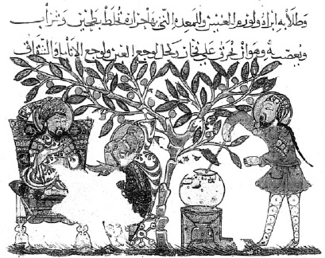

ŞEKİL 16. Dioskorides’in De materia medica adlı ünlü eserinin 13. yüzyılda olasılıkla Bağdat’ta yazılan “Ayasofya 3703” kodlu Arapça nüshasının kayıp sayfalarından birinde, bir bitkisel ilaç hazırlama sahnesi (Süleymaniye Kütüphanesi, İstanbul).43
Bizans döneminde İstanbul’daki Pantokrator Manastırı’na (bugünkü Zeyrek Camisi) bağlı bir hastane bulunmaktaysa da, Bizans İmparatorluğu’nda sağlık işlerine çok fazla önem verildiği söylenemez. 10. yüzyıl Bizans döneminin en güzel kodeksi, Bergama Kralı Attalos III. Philometor’un (yön. İÖ 138-133) saray hekimi olan Kolophon’lu (Örenşehir / İzmir) Nikandros’un (İÖ 2. yüzyıl) Thêriaka - Alexipharmaka (Panzehirler - Zehirler) adlı, 41 sayfalık resimli metnidir. Çizim tekniğinden ve kullanılan temel boyalardan, metnin Helenistik etkiler taşıdığı anlaşılmaktadır. Yılan, akrep ve insan figürlü bitkilerin renkli çizimlerinin yanı sıra, eski fresklere benzer şekilde klasik metinlerden ve mitolojiden esinlenmiş manzara betimlerine de yer verilmiştir (ŞEKİL 17 - ŞEKİL 20).